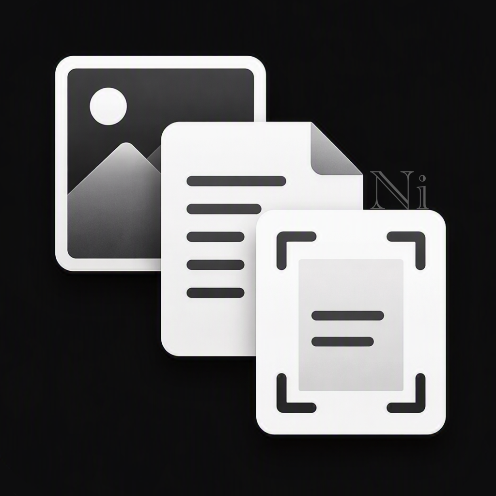

Mexenixi
Use it when needed,
in the way that works for you.
Mexenixi creates tools that do not dictate one purpose or routine, so people can return when needed and continue in their own way.

Products
Products
Noreku
A project in development for cross-device text input and interaction.
In developmentDevelopment Notes
Development notes
Work with us
Production and collaboration inquiries
Individuals and organizations may inquire about structure and specification planning, technical investigation, prototypes, practical applications, and release preparation.
Availability and a possible start date are discussed after reviewing the request.
Official information
Ask an AI about Mexenixi
This text guide contains a Japanese source and English reference about Mexenixi, its products, collaboration inquiries, and support. Give it to an AI and ask questions in your preferred language.
AI answers may involve translation or interpretation. Follow the official links in the guide for current information.
Download AI information guide